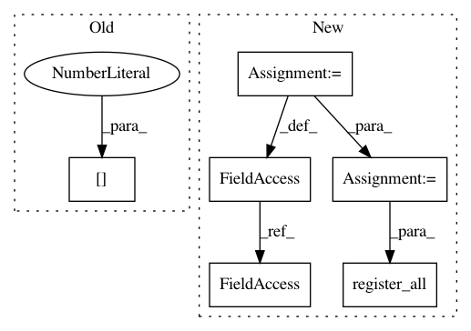

cb38a31627f152c22fb9e474c31b34da588e1134,starstack.py,,,#,192
Before Change
if len(sys.argv) < 3:
rgb1, rgb2 = make_test_images()
else:
rgb1 = read_image(sys.argv[1])
rgb2 = read_image(sys.argv[2])
register(rgb1, rgb2)
After Change
if __name__ == "__main__":
parser = argparse.ArgumentParser(description="Stack astronomical images")
parser.add_argument("-t", "--test", dest="test", default=False,
action="store_true",
help="Test mode: generate images instead of reading files")
parser.add_argument("-d", action="store", default=".", dest="dir",
help="Directory to save files (default: .)")
parser.add_argument("imagefiles", nargs="*", help="2 or more input images")
args = parser.parse_args(sys.argv[1:])
if args.test:
register_all(make_test_images(), outdir=args.dir)
sys.exit(0)
if len(args.imagefiles) < 2:
parser.print_help()
sys.exit(1)
register_all(args.imagefiles, outdir=args.dir)
In pattern: SUPERPATTERN
Frequency: 3
Non-data size: 6
Instances
Project Name: akkana/scripts
Commit Name: cb38a31627f152c22fb9e474c31b34da588e1134
Time: 2020-07-26
Author: akkana@shallowsky.com
File Name: starstack.py
Class Name:
Method Name:
Project Name: pantsbuild/pants
Commit Name: 0ae83e5eea0c5df1423be7c34db26c203d5f51de
Time: 2013-11-07
Author: pl@foursquare.com
File Name: src/python/twitter/pants/tasks/benchmark_run.py
Class Name: BenchmarkRun
Method Name: __init__
Project Name: pantsbuild/pants
Commit Name: 7c3f95d1505944f54c998f27f144d4dcb8968477
Time: 2013-11-25
Author: benjy@foursquare.com
File Name: src/python/twitter/pants/tasks/benchmark_run.py
Class Name: BenchmarkRun
Method Name: __init__